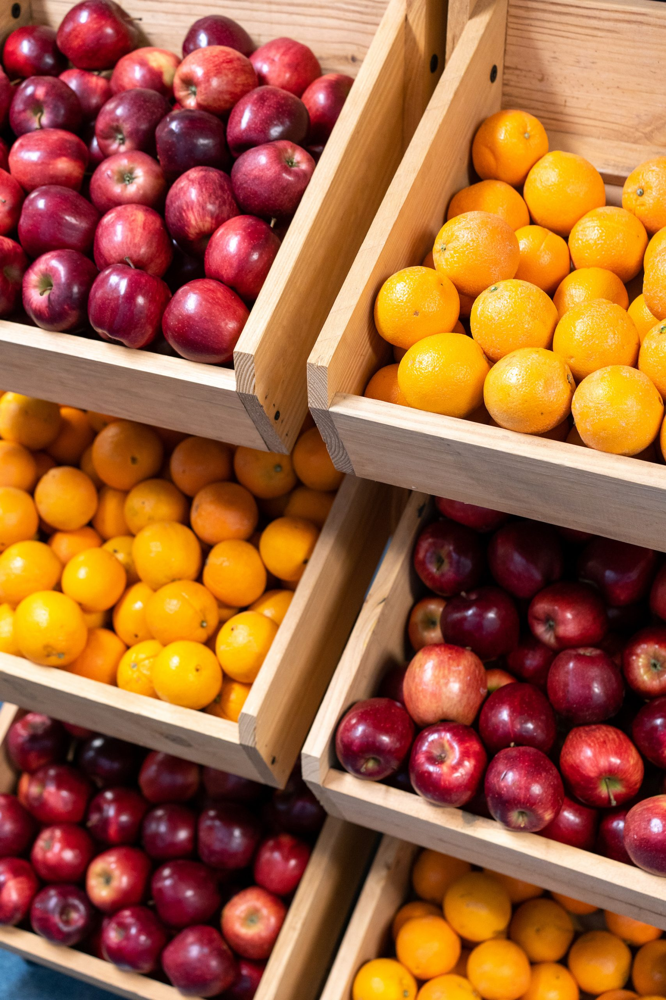

Supporting UMSI Students with Essential Resources
At the University of Michigan, we understand that access to nutritious food is a vital component of student well-being and academic success. The Maize and Blue Cupboard is dedicated to ensuring that all UMSI students have access to the food and resources they need to thrive.
What is the Maize and Blue Cupboard?
The Maize and Blue Cupboard is a comprehensive food pantry and resource center located on campus, offering free access to fresh produce, pantry staples, and personal care items. Our mission is to reduce food insecurity among students and promote a healthy, balanced lifestyle.
Who Can Use the Cupboard?
All currently enrolled students at the University of Michigan, including those from UMSI, are welcome to use the Maize and Blue Cupboard. We believe that no student should have to choose between their education and their next meal.
How to Access Our Services
Visiting the Maize and Blue Cupboard is simple and confidential. Students can stop by during our open hours to select from a variety of food and personal care items. No appointment is necessary, and there are no eligibility requirements beyond being a U-M student.
Get Involved
We welcome volunteers and donations to help us continue serving the U-M community. If you are interested in volunteering or contributing, please reach out to us for more information on how you can make a difference.
Contact Us
For further assistance or inquiries about the Maize and Blue Cupboard, please contact our team. We are here to support you and answer any questions you may have.